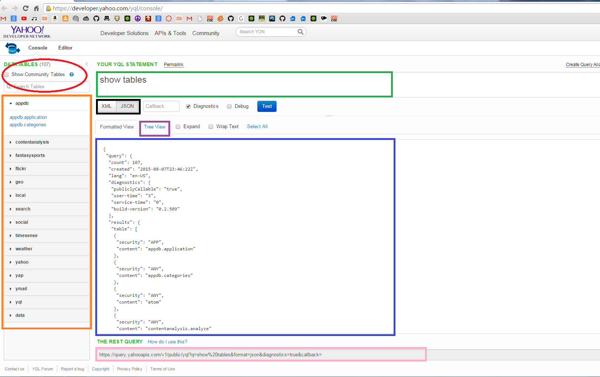

The Console

Visit Here to open up the developer console of YQL.
I've color-coded the most important aspect of YQL and will describe each section below.
Show Community Tables Check-box
Circled on the top left is the Show Community Tables checkbox. Like I've mentioned before, YQL is very similar
to SQL in the sense that you are querying using tables. Clicking this checkbox will display the entire list of tables that YQL has at their disposal.
You will notice that many more tables will appear under the tables section.
List of Tables
Highlighted in orange is the list of tables developers can scan through to query information. Clicking on a table
will display a sample of how to query for that table under the statement text field. Tables hold all the information that returns a response via XML or JSON
after being queried correctly.
YQL Query Field
In the green box is the query text field. Users will enter in their queries in this box and click on the test button
in blue to receive their response. Example queries often come up after users click on a table. This quickly allows users to learn how each table is queried
and what type of information is required in the query statements to allow for correct usage of the table.
XML / JSON button
Users can choose between XML or JSON responses here. This guide will be more focused on using JSON as an example, but
both work just fine.
Tree View Tab
When querying under a large table, most often users will see a large amount of data in the response. By looking at
raw JSON or XML responses, it can be very difficult to determine the different nests of curly brackets in order to parse the response out correctly.
Luckily, there is the Tree View option. Once clicked, the responses will be organized in a tree view making it much more clear on how to read the
data. Users can expand the tree to see what type of information they want to parse from the response.
Response Box
Responses will be displayed out here so as a way for users to quickly see the contents, as well as using the Tree View
option to see their response. This response field serves as a way to make it easier for users to look for the information that they want from their query,
but is not the actual page's response after the query. The actual response is in the REST QUERY link below.
REST QUERY link
This is the last and most important part of the layout. This will be the link that users use to obtain the response from.
Copying and pasting this into a browser, or a cURL command and users will see that the response is what the users queried for. When developing your applications,
users should be aware of how to set up their URL partitions in order to use the REST QUERY url's correctly.